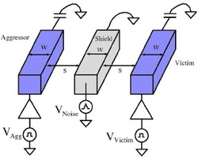

Research
Our research is currently supported by the following research grants:2024 - 2027 ==> Collaborative Research: SaTC: CORE: Small: Exploration of Shared Memory Related Security Challenges in Mobile Computing Platforms, supported by National Science Foundation SaTC award
2023 - 2025 ==> Modeling the Memory-Compute Gap in Large-scale Superconductive Systems, supported by Department of Energy EXPRESS program
2023 - 2026 ==> SHF: Small: Cryogenic Hybrid Systems Integration Across Multiple Temperature Zones, supported by National Science Foundation SHF award
2023 - 2025 ==> Atomically Precise Graphene Nanoribbon-based Transistors: Materials, Devices, Circuits, and Systems, supported by National Science Foundation FUSE award
2023 - 2026 ==> Smarter Nanoelectronics with Atomically Precise Graphene Nanoribbons, supported by Semiconductor Research Corporation LMD award
2022 - 2027 ==> Highly-Efficient All-to-All Coupled Ising Machines, supported by Defense Advanced Research Projects Agency
2022 - 2029 ==> Expeditions: DISCoVER: Design and Integration of Superconducting Computation for Ventures beyond Exascale Realization, supported by National Science Foundation Expeditions award
Hardware security
Our lab focuses on several distinct areas of hardware security research, including side/covert-channel attack analysis and the development of circuit-level countermeasures. We also work on creating PVT- and modeling attack-resistant, area- and power-efficient physically unclonable functions (PUFs). Additionally, we develop PVT-resistant true random number generators (TRNGs), explore logic locking methodologies for superconductive electronics, and assess the feasibility and strength of hardware Trojan circuits in superconducting systems.
On-chip voltage regulation and power delivery
Our research group has significant expertise in developing various types of on-chip voltage regulators, including switched capacitor, buck, and linear regulators. We develop methodologies to address the challenges that arise when a large number of local on-chip regulators supply current to the same power grid, such as stability, current sharing, limit cycle oscillation, aging, and thermal hotspots. We have fabricated several test chips across different technologies, some of which have been used commercially in flagship smartphones. Additionally, we utilize voltage regulators as countermeasures against side-channel attacks, enhancing the security of masking implementations.
Emerging technologies: Superconducting electronics
Our research group has deep expertise in the design and optimization of SFQ-to-DC circuits including Suzuki and SQUID stacks. we have taped out several test chips to investigate performance of these circuits. We also investigate different logic styles and Josephson junction technologies including the bistable Josephson junctions. Our research group has developed the first true random number generator using bstable JJs. Our group has developed the first hardware Trojan for SFQ-based logic circuits. Our research group also works on developing an architectural and system-level simulator for SFQ-based large-scale classical computing systems
Emerging computation paradigms: Ising machines

Our research lab works CMOS implementation of Ising machines to solve NP-hard optimization problems including Max-Cut, low density parity check (LDPC) decoding, and several different types of satisfiability (SAT) problems. Our lab taped out several test chips in close collaboration with Prof. Ignjatotic's research group that can solve different optimization problems. A CMOS Ising machine implementation that can offer multi-body interactions (e.g., no need for minor embedding) was shown for the first time by our research group.
Below are some other research areas where we have significant expertise and would work whenever we have sufficient bandwidth/time/funding/energy/students.
3-D integration
3-D integration is an important enabling technology for the continued growth of advanced computing systems. By vertically stacking two-dimensional (2-D) planes, 3-D integration allows for a drastic reduction in interconnect length, resulting in reduced delay and power. Since in 3-D integration multiple planes are stacked, this technology facilitates heterogeneous systems where different planes are dedicated to a specific function, such as digital signal processing, communications, and imaging. Power network design is however significantly more complicated in heterogeneous 3-D circuits. Algorithms and design methodologies are required to determine the optimum location of not only the on-chip power supplies and decoupling capacitors, but also the vertical through silicon vias (TSVs) which provide connections between the vertically stacked planes. We designed and tested a 3-D test circuit, composed of three vertically bonded wafers with TSVs, to evaluate the effect of different power delivery topologies, TSV densities, and decoupling capacitors on P/G noise.
Power grid analysis
The analysis of power grids in high performance integrated circuits has become a significant challenge in circuit verification due to the high complexity of the power grids. Fast algorithms are required to efficiently analyze large power grids within reasonable time. Closed-form expressions and related algorithms for fast power grid analysis are proposed in this research. An effective resistance model is proposed for semi-uniform power grids. The principle of spatial locality is exploited to accelerate the proposed power grid analysis process. Since no iterations are required for the proposed IR drop analysis, the proposed algorithms are significantly faster as compared to the existing power grid analysis techniques. This method exhibits less than 0.3% error.
Distributed power delivery
With each technology generation, the power delivery network becomes larger and more complicated, makingthe system analysis process computationally complex. The rising number of on-chip power supplies and intentional decoupling capacitors inserted throughout an integrated circuit further complicates the analysis of the power distribution network. Interactions among the on-chip power supplies, decoupling capacitors, and load circuitry are investigated in this research. The on-chip power supplies and decoupling capacitors within the power network are simultaneously co-designed and placed. The effect of physical distance on the power supply noise is investigated. This methodology changes conventional practices where the power distribution network is designed first, followed by the placement of the decoupling capacitors.
Noise aware interconnect design
P/G networks are routed as shield lines in passive shielding to mitigate coupling noise. These P/G shield lines themselves can, however, be noisy. This noise, typically neglected in existing shielding methodologies, is due to inductive noise and resistive voltage drops. Design guidelines for shielding in the presence of power/ground (P/G) noise are presented in this research. The effect of P/G noise on crosstalk is analyzed for different line lengths, line widths, and interconnect driver resistances. Considering the P/G noise, a shield line can degrade rather than enhance signal integrity due to increased P/G noise coupling on the victim line. Physical spacing and shield insertion are compared in terms of the coupling noise on the victim line for several technology nodes. Boundary conditions are also provided to determine the effective range of spacing and shield insertion in the presence of P/G noise. Additionally, the effects of technology scaling on P/G noise and shielding efficiency are discussed, and related design tradeoffs are addressed.